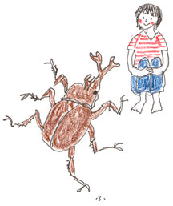
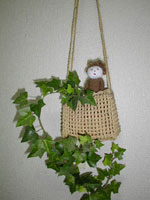

|
カブト虫の夫妻を預かった。
最近のカブト虫は、立派なゼリーみたいなエサを食べるらしい。4歳のジン君が小さな容器入りのゼリーの袋を渡しながら、
「あのね、これはひとは食べないでね」
と念を押す。そう言われても、うっかり食べてしまいそうだよ、ジン君。
「西瓜とか胡瓜はやっちゃ、いけないの？」
「胡瓜はきらいみたいだ。バナナは好きだよ」
虫カゴのなかには、つややかなカブト虫夫妻が、それぞれ好きな方をむいて、じっとしている。
「メスは、土のなかにもぐっていることがあるからね」
まあそうなの、私もときどき土にもぐって隠れたいよ、ジン君。
この夏はカブト虫のほかに、ハムスターを預かった。子どもたちが大事にしているいきものを預かるというのは責任重大だが、ふだん懇意にしていないハムスターやカブト虫と3、4日ともに過ごすだけで、教えられることがある。教えられるのは、いきものと向き合う自分自身の姿なのだが……。
あれは、カブト虫夫妻を預かった2日めの朝のこと。ミセスカブトがいない。メスは土にもぐるとジン君が言っていたのを思い出して、あちらこちら指でほじくって探したが、いない。ほんとに、いない。
「カブトさん。ミセスカブト！ カブト夫人！！」
私はあせった。ほとんど泣きそうな顔で、家の者たちを集めて、カブトが奥さんを食べちゃったよおと、訴えた。
「いや、そういうことはないと思うよ。エサもこんなにあるのだし」
「昼ごろ、土のなから出てくるよ」
「それに、これ夫婦なの？」
この家のなかで、大騒ぎするのはいつも私ひとり。あとのメンバーはなぜかいつも冷静で、落ち着いているのだ。
（薄情もの……）
しかし、彼と彼女たちの言うとおり、ミセスカブトは午後11時に覗いたときには、土の上に姿をあらわしたばかりではなく、バナナのなかに顔を埋めておそるべき食欲を見せつけた。
「こう言っちゃなんだけどさ、それ、フィリピンはネグロス島の無農薬、無燻蒸のちょっとお高いバナナだからね。味わって食べて」
カブト虫は眺めていても、曲芸を見せてくれるでなし、かわいいというのとも趣の異なる存在だ。それなのに、仕事の手をとめ、じーっとみつめずにいられない何かがあった。彼らの背景に森や、泉、キイチゴなんかが繁る草むらが透けて見える。それは、私が子ども時代に見た風景。東京郊外にも、小さな森があり、「この木には、いそうだな」というようなことが、わかったりしたものだった。いそうな相手はカブト虫だったり、クワガタだったりした。カブト虫がクワガタとけんかしているところを、いっぺんにつかまえたこともあった。あの森はどこに消えてしまったのだろうか。小さな泉はどこに……。この夏のはじめ、兵庫県明石市の花火大会会場で、11人ものひとが亡くなるという事故が起きた。見物人があふれ、将棋倒しによる事故、それも計画のほころびが原因の人災の様相を呈しているとのことだが、いま、自然界にも将棋倒しがはじまっている、とふと思う。森が消え、泉が埋められ、川や田んぼが整備され、小動物がいなくなり、虫がいなくなり、子どもの遊び場が変わった。将棋倒し。ひとが大切な何かを忘れ、ひとの都合だけを考えてきた結果が、いまに私たちの身に倒れかかってくる。
「茗荷の食べ過ぎじゃあないのかねえ」
夏になると、祖母がよく言った冗句だ。誰かが何かをうっかり忘れたり、ど忘れしたりすると、こう言ってからかうのだった。茗荷を食べると忘れっぽくなるという言い伝えは、どこからきているのだろう。たしかに茗荷の美味しさには、摩訶不思議なところがあるけれど……。それに、昔のひとのもの忘れは茗荷周辺にとどまり、大事なことはあんまり忘れなかったのかもしれないなあ。

■茗荷と茄子の辛子ごま味噌和え（4〜5人分）
茗荷……………………………………3〜4個
茄子…………………………………………5個
すりごま（白）………………………大さじ3
味噌……………………………………大さじ3
しょうゆ………………………………大さじ1
酢………………………………………大さじ2
砂糖……………………………………小さじ2
みりん…………………………………大さじ1
練り辛子……………………………小さじ1/2
・茗荷は縦にせん切りにし、水にさらしておく。
・茄子は焼き網で焦げめがつくまで焼き（私は魚のグリルで焼いてしまう）、水にとる。
・茄子の皮をむき、食べやすい大きさに切って（1/6〜1/4くらい）、さます。冷やしてもいい。
・すりごま以下の調味料を合わせ、よく混ぜる。
・茗荷と茄子は水気をきって、辛子ごま味噌で和える。このとき、茄子の大きさによって辛子ごま味噌の量を調節する。
※茄子を油で揚げ（この場合は皮つきのまま、食べやすい大きさに切ってから）、茗荷と合わせて、同じ辛子ごま味噌で和えてもおいしいですよ。

冒頭のクイズの答え。「西瓜や胡瓜はカブト虫のエサとして適していません。なぜならお腹をこわすそうです」
|